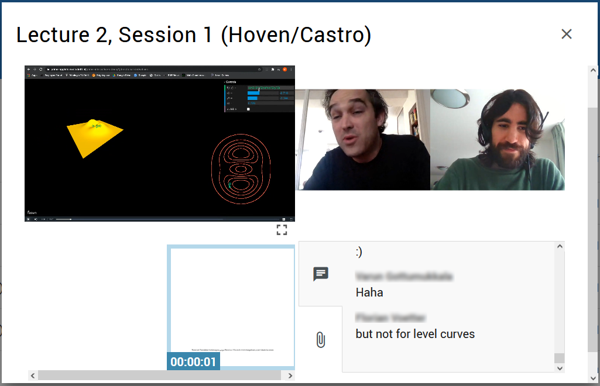

We present our short series of interactive animations on directional derivatives and level curves.
This visualisation was developed for students of first-year mathematics courses at the Delft University of Technology. The interactive animation is an animated video that can be interacted with while it is paused or playing. This allows for visualising complex topics in class that cannot be easily sketched or drawn in a dynamic and interactive manner. At home, students can discover and re-watch with the voice over explanation: the interactive animation is also embedded in online homework exercises.
The interactive animation includes, amongst others, the following features:
Our web-based application combines React, ThreeJS and GSAP. The interactive animations use GSAP Timelines and Tweens for the animations. Our approach to rendering is fairly straightforward, we use ThreeJS for WebGL and canvas for 2D rendering and GSAP for tweening. The novelty of our approach is in the use of React and GSAP timelines and tweens by using two state objects, which we describe in Timelines & State.
Further technical documentation will be released, access can be requested already. We are happy to share our work and enable others to work on more interactive animations.
While there is some documentation on using React with GSAP, the approach used in this project differs in some specific ways to make the Timelines and Tweens as simple as possible, in particular the way state is handled.
Animation components with Timelines
We made animation components, in which we set up a main GSAP timeline. Each section in the animation has its own sub-timeline, these are all children of the main timeline. In the animation component constructor, we create an object that stores the sub-timeline states. These states will contain the start state the animation ought to be when a sub-timeline begins.
Adding sub-timelines
The sub-timelines (all subsections of the animation) are added to the main timeline after mounting the animation component: the constructor is that GSAP is not able to create Tweens for some targets if they are not rendered yet. This happens for example when tweening React refs. Ensuring that the animation component has mounted, also ensures that all Tween targets are available when GSAP tries to access them.
Start & State
Each sub-timeline has a set duration, a position on the main timeline and a label. Within each sub-timeline component, we set labels for the state in which they ought to start playing; their start-state. Adding these labels to the main timeline allows the user to skip through the timeline freely. The timeline and their respective states are passed to the component that handles user input and keeps the timeline and audio synchronized. When the user skips to a particular timestamp in the animation, this input component fetches the start-state corresponding to the label associated with the timestamp and sets the start-state. This ensures that the animation component is in the expected state at the start of each child timeline.
Tweens & State
Each sub-timeline has one or more GSAP Tweens added to it, as well as a start-state. The start-state is set at the start of a tween. GSAP modifies the target object of a tween directly, which is not allowed for React state, as this will not update the component. To circumvent this, we have introduced a second state for the tween targets, which we call animation-state. The object animation-state is used as tween target and contains the same values as the component state, but since it is not the actual state of the component, we can let GSAP directly modify animation-state. Each update to the animation-state is then propagated to the components state, each time the tween is updated.
The interactive animation series has been used in one pilot course of about 500 students: WI1402LR Calculus II, aimed towards first-year Nanobiology and Aerospace Engineering students at Delft University of Technology. Lecturers used the interactive animations, usually while on 'pause', to explain and illustrate their lecture. Students then explored the interactive animation afterwards at home to recap and expand their understanding of the lecture, and used the interactive animations to do their homework exercises: accompanying exercises have been made for students. The exercises will be made public on the Grasple platform.
 Lecturers using the interactive animation in class.Our result is a short series of 4 parts. All 4 parts can be watched and interacted with below. Press play to start and try interactions in the screen: change the function that is plotted, drag the 3D plot to adjust your view and explore it or use the controls menu!
This first part introduces the concept of level curves. It features, amongst others, the possibility to adjust and add level curves.
This second part introduces the concept of directional derivatives. It features, amongst others, the possibility to change many of the variables in the controls menu and to adjust the 3D and 2D views.
This third part explains the relationship between level curves and directional derivatives.
This final bonus part explains the relationship between level curves and gradients.
This project was realised by the Visuals Team of TU Delft PRIME.
Technical lead: Sayra Ranjha
Concept & script: Fokko van de Bult, Dennis den Ouden-van der Horst
Narrator: Beryl van Gelderen
Documentation & storyboarding: Vera Hoveling
Student Exercises: Christophe Smet
Consultants: Marijn Roelvink and Ilse Bakker.